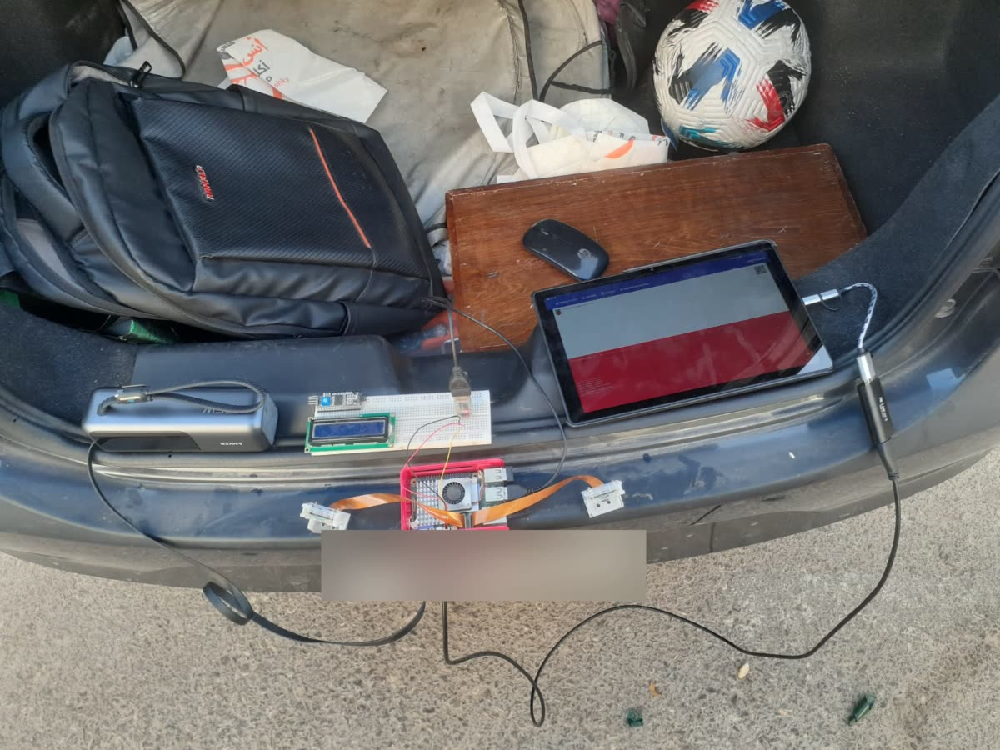
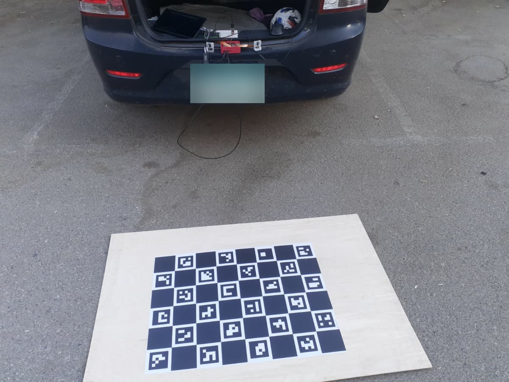
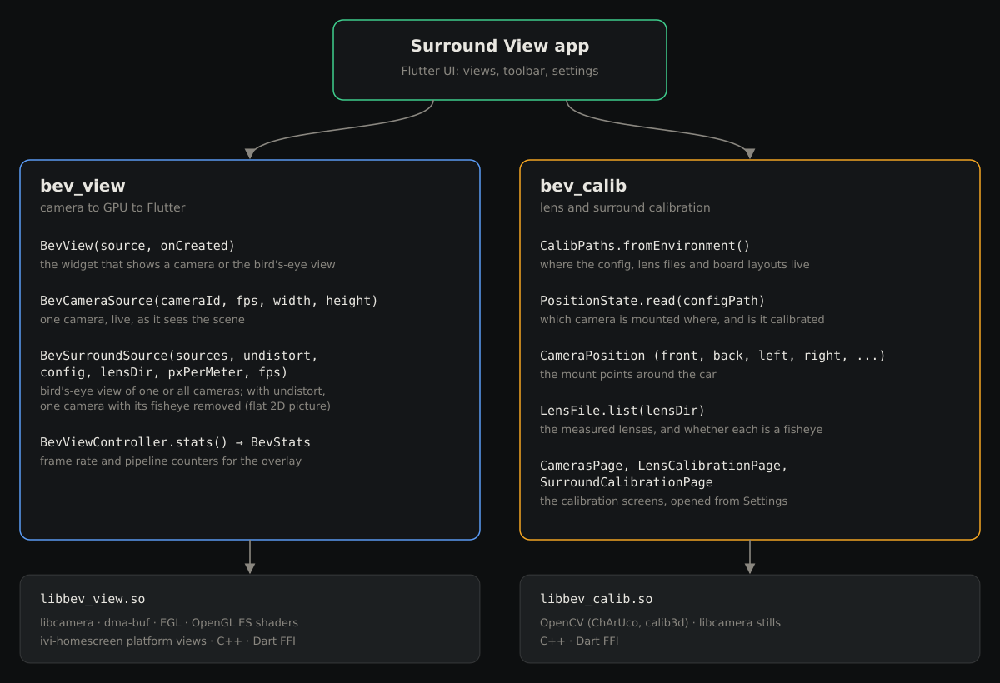
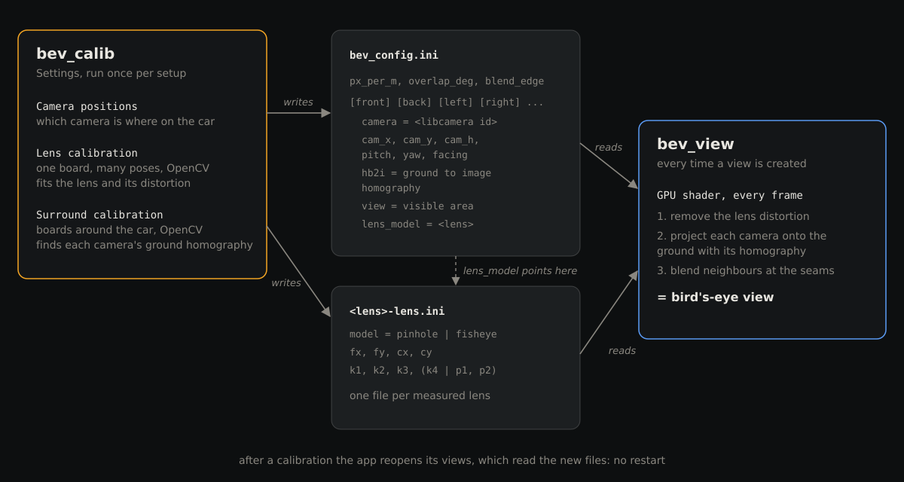
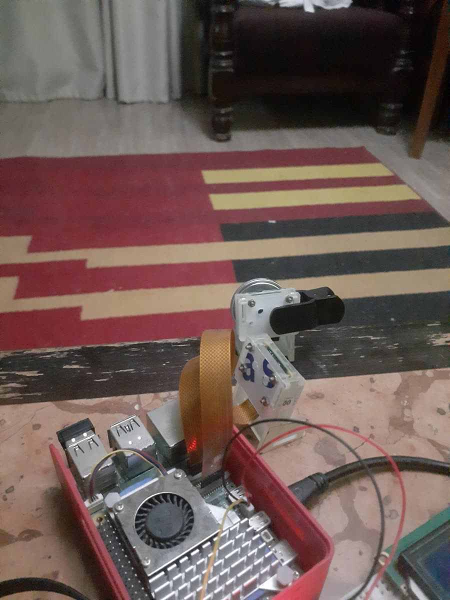
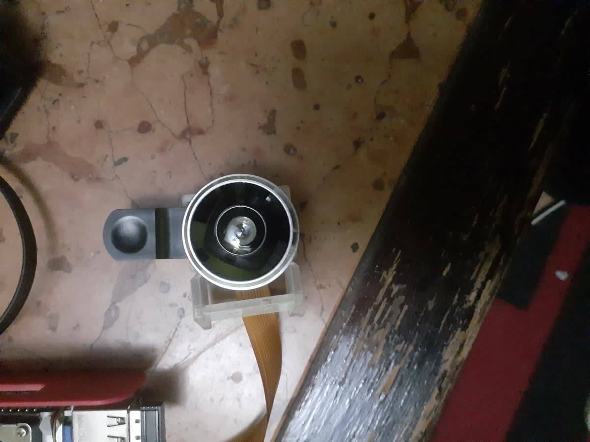

My GSoC 2026 project with Automotive Grade Linux was an AI-enabled backup camera. I built its foundation, a zero-copy camera pipeline from libcamera to the GPU, and on top of it Surround View: a Flutter application for AGL that shows the car's cameras live and stitches them into one top-down bird's-eye view.



The user interface. A toolbar switches between the views, each one a live BevView widget:
From Settings the user assigns each camera to its position on the car and starts the lens calibration or the surround calibration. A guide overlay and a distance grid are one tap away in every view.
It runs on a Raspberry Pi 5 with any camera libcamera supports. I developed it with two IMX219 CSI cameras, and USB (UVC) cameras work as well.
A Flutter plugin with a native library that takes a camera all the way to the screen. Frames from libcamera go
to the GPU as dma-bufs, with no copy on the CPU, a shader renders them, and the result reaches the Flutter UI
as an ivi-homescreen platform view (ivi-homescreen is the program that runs Flutter apps on AGL, and a platform
view lets native GPU content sit inside a Flutter screen). An app only places a BevView widget and
picks what it shows:
Each view is configured when it is created: which cameras it shows, by libcamera id or by mount position from
the calibration config, and the camera resolution, frame rate and bird's-eye zoom, which the app reads from
BEV_* environment variables. A BevViewController reports live statistics such as the
frame rate, which the app shows as an overlay with BEV_STAT=1.
The lens and surround calibration the bird's-eye view needs is done inside the app with ChArUco boards and OpenCV, once, and saved for the GPU to use.
Everything the calibration and the Settings page produce is saved to ini files: bev_config.ini
holds which camera is mounted at each position, each camera's pose and ground homography, and the
bird's-eye view's zoom and seam settings, and one <lens>-lens.ini file per measured lens
holds its distortion model. The app reads these files whenever a view is created, so when the user leaves
Settings or finishes a calibration, the views reopen with the new configuration, without restarting the app.

The lens calibration measures one camera at a time: the user holds a ChArUco board in front of it in many poses, picks a pinhole or fisheye model, and OpenCV fits the lens and its distortion. The app captures a picture automatically once it detects 18 board corners in a new pose, so the user only has to move the board around. The surround calibration places every camera on the car: boards are laid on the ground around the car following a board layout, each camera finds the boards it sees, and their known positions give that camera's homography from the ground to its image. Where two cameras see the same board, the app also measures how well their seam lines up.


bev_view and bev_calib, with the full historyapps/flutter-surround-view on AGL Gerrit: created for the app, the history import is in progress| Change | Repo | What it does | Status |
|---|---|---|---|
| 32099 | meta-agl-demo | Adds the flutter-surround-view recipe and puts the app in the Flutter demo image on Raspberry Pi 5 | merged |
| 32100 | meta-agl | Builds flutter-auto with the compositor option on Raspberry Pi 5, which platform views need | merged |
| 32102 | meta-agl | Uses the Raspberry Pi libcamera fork on Raspberry Pi 5, which supports its camera pipeline | merged |
| 32180 | documentation | Adds the Surround View page to docs.automotivelinux.org | in review |
Surround View is part of AGL: the recipe and the two platform changes it needs are merged, so the AGL Flutter demo image for Raspberry Pi 5 builds and ships the app. On the Pi it shows each camera live, flat or from above, stitches the mounted cameras into the 360 degree view, and runs both calibrations inside the app, with the frames going from libcamera to the screen without a copy on the CPU.
apps/flutter-surround-view on AGL Gerrit and point the recipe at itregister_factory('views/bev-view') failed: -4). I learned how the shell composites Flutter's
layers and the platform views between them. The code that carries my shader's output into Flutter was
written by Joel Winarske: the ivi-homescreen platform view, which renders into a ring of dma-buf buffers and
hands each frame to the shell with fences on both the EGL and the Vulkan backend, and the
bev_viewstd::string across the boundary.
The recipe builds them with libstdc++ instead, the same as libcamera.Nothing I write here will be enough, really. I never thought people would spend their own time just so someone else could benefit (capitalism, and life is short), but what I have seen over these months changed how I see things.
I could never have done any of this without this amazing community. The time my mentors spent explaining what to do, how to do it, and why it should be done that way was incredible. The explanations they gave me whenever I was lost in the architecture, the patience when I spent longer than I should have on a task, and so much more: I can't thank them enough.
So, thanks a lot. Once I have a car, AGL will be my first choice (it would be cool to drive a motor through its CAN support and make my car like Batman's), and Surround View will be running there for sure, hopefully with longer CSI cables.